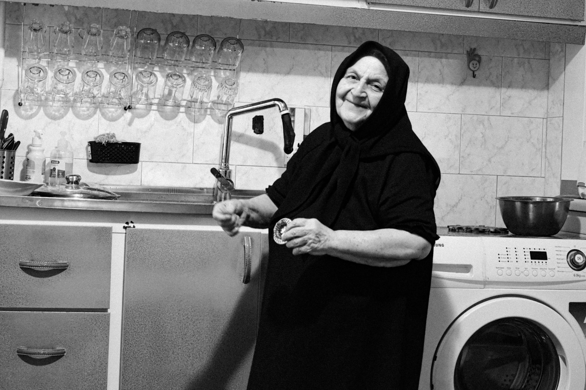
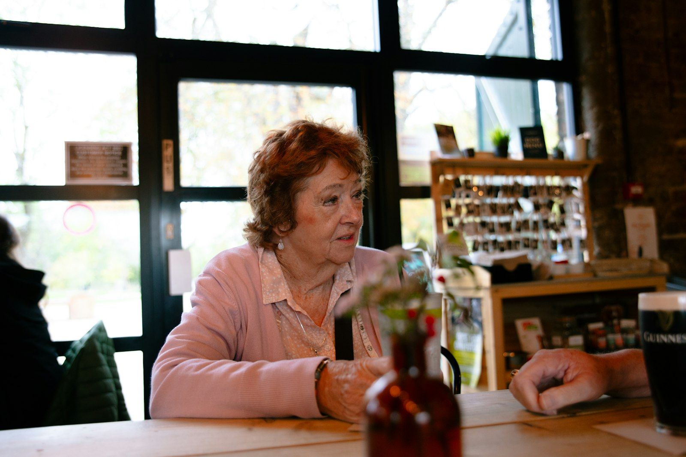
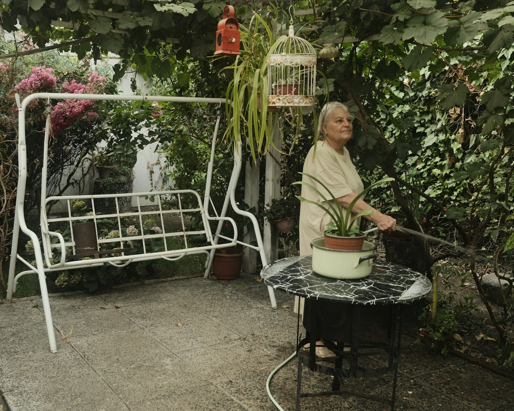
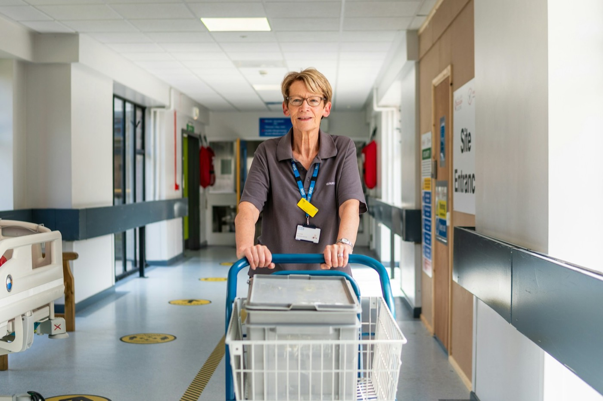
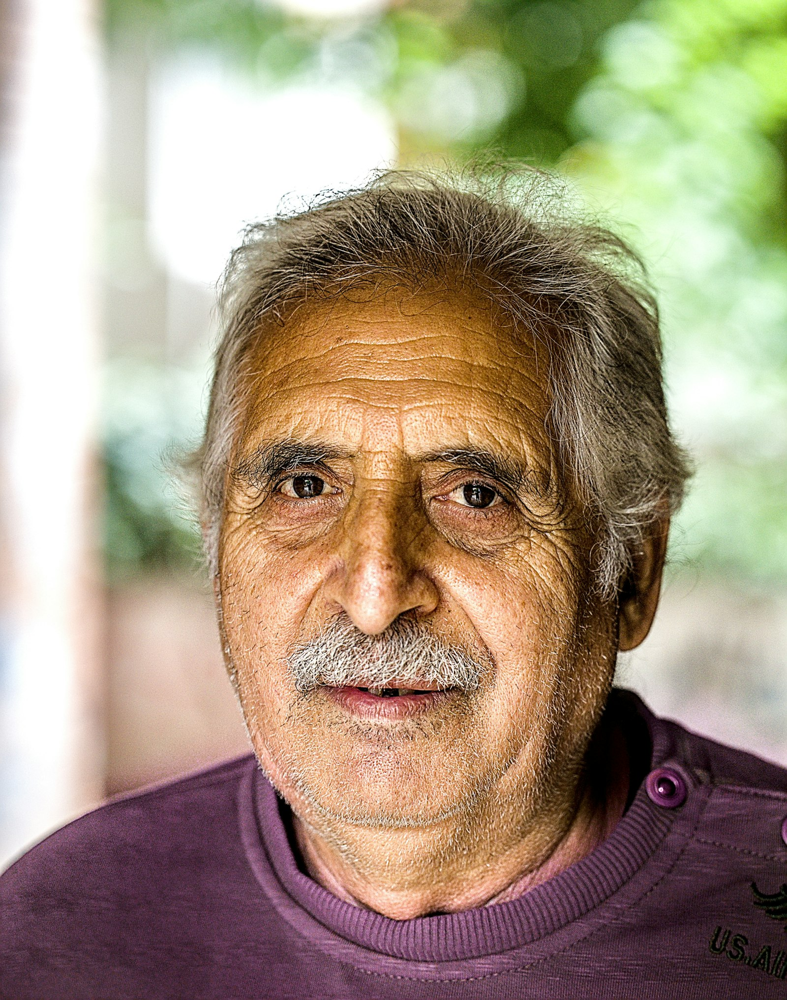
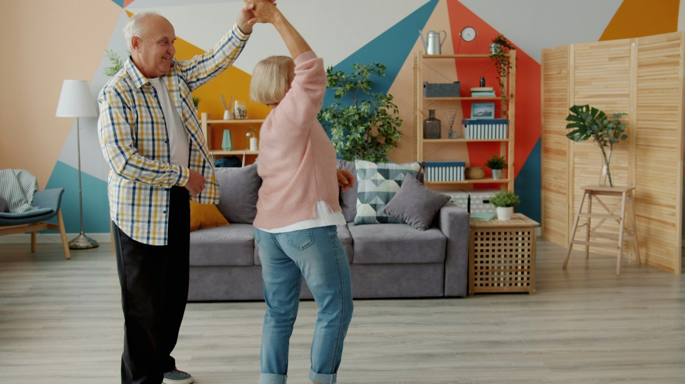

An older couple on a video call with family
An older couple on a video call with familyWho it is for
For families who live hours, states or countries away.
You call your mom every day and still worry. You fly in when there is a crisis. You wonder what you are not being told.
Care from afar puts eyes, hands and a decision-maker in their home, and puts you back in the loop.
Be there anyway
From wherever you are to their front door.
Scroll to zoom in.
- Maria arrived · GPS check-in
- Breakfast eaten, all of it
- Fluids: 2 glasses of water
- Walk in the garden, 20 minutes
- Lunch eaten
- Mood: calm · listened to Sinatra
- Photo shared with the family circle
- Afternoon routine started early, as planned
What is included
Everything a long-distance family needs.
A named Care Director
Your single point of contact, who knows your family and decides with you.
The family app
Live check-ins, care notes, mood and meals, photos with consent. See the app.
Monthly video call
With the Care Director and, if they like, your parent, to review how things are going.
Weekly summary
Every Sunday, in plain words, by email and in the app.
Local errands
Groceries, prescriptions, appointment rides, the mail and a check of the house.
Appointment notes
We go with them and write down what the doctor said.
Emergency escalation
What happens when something goes wrong.
- Minute 0
The caregiver acts
Calls 911 if needed, keeps them safe and stays with them.
- Minute 5
Care Director alerted
Through the app and by phone, with what happened.
- Within minutes
You are called
The first person on your emergency ladder, then the next.
- Same day
Written incident note
What happened, what we did and what changes now.
- Within a week
Review
The care plan is updated and you approve it.









Close, even when you are far.
Photos, messages and a one-tap video call, so grandchildren and great-grandchildren stay part of the day.
How we are different
You will never have to chase us.
Dementia-trained, every one
Every caregiver finishes our dementia training before their first visit, not 'when they get to it'.
The same small team
Two or three caregivers who know them, and a backup you meet before day one.
You can see it happen
The family app shows check-ins, care notes and a weekly summary.
Promises with numbers
Start times, replacement times and call-back times we measure and publish.
Price
From USD $38/hour
Care from afar is added to any care plan. The Care Director, app and monthly call are included; errands are charged at the hourly rate.
Your exact price is confirmed in writing after the free assessment. No sign-up fee, no long contract.
Questions
Five questions from long-distance families.
Who is the Care Director?
One named senior person who knows your family, takes your calls and makes decisions with you. Not a call centre.
How will I know what is happening?
The family app shows each visit live, care notes and photos with consent. You also get a weekly summary and a monthly video call.
What happens in an emergency?
The caregiver calls 911 first, then the Care Director, who calls you within minutes and follows the emergency ladder you agreed.
Can you run errands?
Yes: groceries, prescriptions, rides to appointments, collecting mail and checking the house.
Can my siblings see the app too?
Yes. Invite them to the family circle with their own permissions: view only, can message, or can approve changes.
No question matches. Call us and ask a person.
What this does not cover
- Legal decisions such as power of attorney or guardianship (we can point you to help)
- Managing their bank accounts
- Medical decisions; those stay with them, you and their doctors
Book a free assessment Call (813) 555-0142

Good days are made of ordinary moments.
Tea in the right cup. A walk in the garden. Someone who listens.




Next step
You do not have to work this out alone.
Call (813) 555-0142 and a care advisor will listen first, then tell you plainly what we would do and what it would cost.